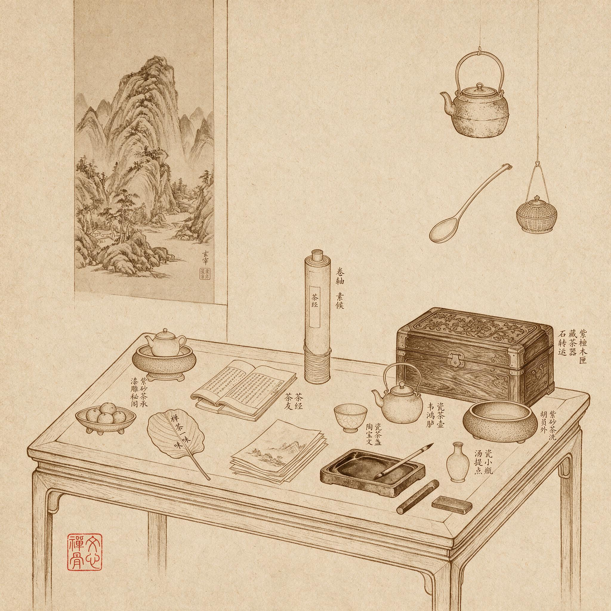

第 12 章
南北宗论定画禅
“禅家有南北二宗，唐时始分。画之南北二宗，亦唐时分也，但其人非南北耳。”——董其昌在《画禅室随笔》中写下此语时，正试图将茶寮小室里反复演练的瞬间判断，置于一个更宏大的理论框架之中。茶事中一水之间判定的雅俗，一席之间掂量的人品，此刻被他投射到一部跨越千年的绘画史上，从品味的直觉上升为历史的判断。
这句话出现在董其昌《画禅室随笔》中时，语气是平静的。它不是论辩，不是争鸣，而是一种陈述——仿佛在说一件业已确定、不证自明的事。但恰恰是这种平静，暴露了它的野心。
因为董其昌在说这句话的时候，正在做一件极不平静的事：他用禅宗的分派逻辑，重写了整个中国绘画史。重写历史，从来都需要一副不容置疑的口吻。
我们得先回到这句话的语境中去。《画禅室随笔》不是一部体例严整的画论著作。它是随笔，是零散的题跋、品评、杂感的汇集。董其昌在其中谈画、谈禅、谈书法、谈收藏，随手写下，不求系统。
但恰恰是在这种随意的形式中，他完成了中国绘画批评史上最系统的一次话语建构。那段关于南北宗的文字，不过寥寥百余字，却像一枚楔子，钉入了此后三百年中国绘画批评的肌理之中。要理解这枚楔子的力量，不能只读这段话本身，还要看它是如何被放置的。
《画禅室随笔》的书名本身就是一个宣言。“画禅室”是董其昌的书斋名，将“画”与“禅”并置，意味着他有意将绘画纳入禅宗的观照方式之中。
这不是一般文人随口说说的“禅意”“禅境”，而是将禅作为一种理解绘画的根本框架。书斋的命名，是一种姿态；而书中那段关于南北宗的文字，则是这种姿态的理论展开。董其昌写道：“禅家有南北二宗，唐时始分。画之南北二宗，亦唐时分也，但其人非南北耳。北宗则李思训父子着色山水，流传而为宋之赵幹、赵伯驹、赵伯骕，以至马、夏辈。南宗则王摩诘始用渲淡，一变钩斫之法，其传为张璪、荆、关、董、巨、郭忠恕、米家父子，以至元之四大家。亦如六祖之后，有马驹、云门、临济儿孙之盛，而北宗微矣。”
这段话的信息密度极高。它同时完成了三件事：建立类比、排列谱系、暗示优劣。
建立类比，是第一层功夫。禅宗在唐代分为南北二宗，这是宗教史上的常识。慧能与神秀，顿悟与渐修，南能北秀，这套叙事在晚明已经家喻户晓。董其昌将绘画史直接比附于这套叙事，等于借用了禅宗法统的权威性来为绘画立“法统”。这层类比的妙处在于，它不需要论证——因为禅宗南北分宗本身就是一个被广泛接受的历史叙事，董其昌只是将这套叙事平移到了绘画领域。
排列谱系，是第二层功夫。南宗的谱系，从王维开始，经张璪、荆浩、关仝、董源、巨然、郭忠恕、米芾父子，直到元四家黄公望、王蒙、倪瓒、吴镇。这是一条清晰的传承线索，每一个名字都是画史上已有定评的大家。北宗的谱系，从李思训父子开始，经赵幹、赵伯驹、赵伯骕，到马远、夏圭。这也是一条脉络，但比起南宗的阵容，明显要单薄许多。暗示优劣，是第三层功夫。董其昌没有直接说北宗不好。
但他在描述南宗时，用了“亦如六祖之后，有马驹、云门、临济儿孙之盛”——这是禅宗史上的黄金时代，是正法眼藏的传承。而说到北宗，只有淡淡的一句“而北宗微矣”。“微”这个字，是衰微、凋零、式微。不需要任何激烈的贬词，一个“微”字，已经判定了北宗的历史地位。
这三层功夫叠加在一起，产生了一种强大的修辞效果：读者会觉得，文人画的南宗正统，仿佛不是董其昌在建构，而是历史本身如此。他只是那个发现并说出这一真相的人。
但历史本身真的是这样吗？我们不妨仔细审视这个谱系。王维“始用渲淡，一变钩斫之法”——这个判断，在明代几乎无法用画迹来验证。王维的真迹在宋代已极罕见，到了晚明也是凤毛麟角。董其昌自己收藏的所谓王维画作，包括那件著名的《雪溪图》，其真伪在当时就有争议。他凭什么断定王维“始用渲淡”？很大程度上，依据的不是画迹，而是王维的诗。
王维的诗“清淡自然”，于是他的画也被想象成“渲淡”的风格。这是一种以诗推画的推理，而非以画证画的鉴定。
再看谱系中的师承关系。张璪是否直接师承王维？画史并无确证。荆浩、关仝与王维之间的传承线索，同样模糊不清。董源、巨然被归入南宗，固然有其风格上的道理——他们的山水画确实以平淡天真见长——但董、巨的时代距王维已逾百年，其间并无明确的师承链条。至于将郭忠恕列入南宗，也是牵强。郭忠恕以界画闻名，精于楼阁屋木，其画风与文人画所推崇的“写意”精神相去甚远。
北宗的谱系同样存在问题。李思训父子的着色山水，是唐代青绿山水的典范。但宋代院体画是否直接承袭了李氏的传统？赵伯驹、赵伯骕的青绿山水，与李思训之间隔着一个五代，画风已有显著变化。至于将马远、夏圭归入北宗，也是将复杂的历史简化为对立的两极。马、夏的山水，虽然出自院体，但他们的“一角半边”式构图，那种大片留白、空濛淡远的意境，难道不也暗合禅宗的“空”观吗？
这些疑问，晚明的鉴赏家并非没有注意到。与董其昌同时代的李日华，就在他的笔记中对南北宗的划分表示过保留。
稍晚的唐志契，在《绘事微言》中也委婉地指出，画史并非如此截然二分。但董其昌的南北宗论，其真正的力量恰恰不在于它是否符合画史事实。它的力量在于，它提供了一套可操作的批评工具，一套士大夫们可以立刻上手使用的品味话语。
这套话语的核心，是将禅宗的“顿渐”对立转化为绘画的品味标准。在禅宗的叙事中，南宗慧能主张“顿悟”——直指人心，见性成佛，不假修习。北宗神秀主张“渐修”——时时勤拂拭，莫使惹尘埃，需要长期的修行积累。董其昌将这套对立直接映射到绘画上：南宗画如顿悟，一超直入如来地；北宗画如渐修，积劫方成菩萨。“一超直入”与“积劫方成”——这八个字，是南北宗论最锋利的部分。
它告诉士大夫们：你们画画，不需要像职业画工那样经年累月地苦练技法。你们只需要凭借你们的悟性、修养、书卷气，就可以“一超直入”地达到绘画的最高境界。而职业画工，即使技法再精湛，也只是“积劫方成菩萨”——终究隔了一层。
这其中的机锋在于：董其昌用最“不可学”的禅悟，划定了一条最“可学”的师承路径。他在另一处写道：“画家六法，一曰气韵生动。气韵不可学，此生而知之，自然天授。然亦有学得处，读万卷书，行万里路，胸中脱去尘浊，自然丘壑内营，成立鄞鄂，随手写出，皆为山水传神。”
这段话的前半句，是禅宗的逻辑——气韵不可学，它是天赋，是悟性，是与生俱来的。但后半句立刻转折——“然亦有学得处”。怎么学？不是学技法，不是练笔墨，而是“读万卷书，行万里路”。这是一种文化修养的积累，一种人格的陶冶。它不教你如何运笔，而是教你如何成为一个有气韵的人。
这样一来，董其昌就完成了一个极其精妙的操作。他将“不可学”的气韵，转化成了“可学”的修养。文人画家不必像画工那样苦练技法——那太“渐”了，太像北宗了——但必须读书、行路、养气。而这种修养，恰恰是士大夫阶层所独有、职业画工所难以企及的。职业画工可以练出精湛的技法，但他们没有科举的经历，没有经史的涵养，没有那种在仕途沉浮中磨砺出来的复杂心性。他们可以画出逼真的物象，但画不出那种“读万卷书，行万里路”之后自然流露的书卷气。而这种书卷气，在董其昌的批评体系中，正是“气韵”的核心内涵。于是，南北宗论就不仅仅是一种绘画批评理论。
它也是一种社会区隔的工具，一种在品味竞争中制造壁垒的话语策略。要理解这种策略的必要性，必须回到晚明的艺术世界。那个世界，正处在一场深刻的品味竞争之中。松江派与浙派的对立，是这场竞争最显著的表征。
浙派承续南宋院体传统，以戴进、吴伟为代表，画风刚劲雄健，笔墨酣畅淋漓，在明代中期一度占据画坛主流。松江派则以文人画相标榜，追求笔墨趣味与书卷气，其代表人物正是董其昌。两个派别之间的竞争，不仅是风格之争，也是市场之争、地位之争。晚明的书画收藏蔚然成风，徽商、晋商携巨资涌入艺术市场，一幅画的作者归属、风格定位，直接关系到它的价格。而谁有权力定义什么是好画、什么是雅画、什么是正宗的文人画，谁就掌握了艺术市场的定价权。
董其昌的南北宗论，正是在这个背景下应运而生。他将松江派所继承的文人画传统——王维、董源、巨然、元四家——确立为南宗正脉。这个谱系中的每一位画家，都是文人画的典范。同时，他将浙派所承续的院体画传统——李思训、马远、夏圭——归入北宗。
他没有直接说浙派不好，但他用“北宗微矣”四个字，将浙派置于一个历史性的劣势地位。这套操作，从学术角度看或许不够严谨，但从社会效果看却极为成功。
它完成了三件事。第一，它为文人画提供了一个历史谱系。在董其昌之前，文人画虽然已经高度成熟，但缺乏一套系统的历史叙事来论证自己的正统地位。南北宗论填补了这个空白——它告诉世人，文人画不是某个时期的偶然产物，而是自唐代王维以来一脉相承的道统。这个道统，如同禅宗的传法谱系一样，具有不容置疑的权威性。
第二，它建立了一套评判标准。什么样的画是好画？有气韵的画。什么样的画有气韵？南宗画。谁属于南宗？那些读万卷书、行万里路的文人画家。这套标准环环相扣，最终落到了画家的身份和修养上，而非技法层面。
这意味着，评判一幅画的好坏，首先要看画家的文化身份，而非画作本身的形式品质。第三，它在品味竞争中制造了壁垒。如果好画的标准是技法精湛、描摹逼真，那么职业画家经过长期训练完全可以达到甚至超越文人画家。
但如果好画的标准是气韵生动、书卷气、读万卷书行万里路之后的文化气质，那么职业画家便天然处于劣势。他们不是士大夫，没有科举出身，没有那种浸淫于经典之中的文化涵养。南北宗论以禅宗的超越性话语，为文人画筑起了一道职业画家难以逾越的品味壁垒。这便是禅骨转化为社会权力的运作机制。
禅宗的“不立文字”在这里变成了“立文字”——立一套批评话语。禅宗的“直指人心”在这里变成了“直指身份”——你的画好不好，首先取决于你是谁。禅宗的超越性在这里变成了入世性——它不再是出离尘世的心性修行，而是在尘世中争夺文化权力的有效工具。
董其昌并非只在理论上构建这套框架。他同时通过收藏、题跋、品评等一系列实践，将自己的理论落到实处。他对古代画作的收藏，规模庞大且品味明确。在他的收藏中，王维、董源、巨然、元四家的作品占据了核心位置。每当他得到一件符合南宗谱系的作品，便会反复品赏、题跋，将自己的判断留在画面上。
这些题跋，既是个人鉴赏的记录，也是理论建构的实践——每一次题跋，都在强化那个谱系的合法性。他对董源的态度，尤其能说明问题。
董源在五代宋初并不算最显赫的画家。宋代画史对他的评价，远不及对李成、范宽那样推崇。郭若虚《图画见闻志》论山水三家，举的是李成、关仝、范宽，并未提及董源。但在董其昌的南北宗论中，董源被列为南宗的关键人物，地位仅次于王维。董其昌收藏了多件传为董源的作品，包括那件著名的《潇湘图》。他在题跋中反复强调董源的品质：“平淡天真”“不装巧趣”“一片江南”。这些词汇，正是南宗文人画的核心特征。
“平淡天真”这个词，本身就带有浓厚的禅意。它不是描摹物象的准确，不是构图的精巧，不是色彩的绚丽，而是一种去除雕饰之后的本真状态。这种状态，与禅宗所追求的“本来面目”如出一辙。董其昌用这个词来定义董源，实际上是在用禅宗的审美标准来重塑画史——他告诉世人，最高级的画，不是最“像”的画，而是最“淡”的画。
这种重塑的力量，在后世博物馆的收藏与展示中得以延续。例如，上海博物馆的书画收藏超过一万件，年代从唐宋至近现代，较系统地反映了中国书画的发展历程。其绘画部分，既有宋代马远、夏圭等院体作品，也有元代倪瓒、黄公望的文人山水，明代沈周、文征明、董其昌等代表人物的创作。观众在这些作品的对比中，能直观感受到董其昌所构建的“南宗”谱系——从董源、巨然的平淡天真，到元四家的萧散简远——如何成为理解中国绘画史的一条关键线索。
“淡”这个字，在董其昌的批评语汇中占据着核心位置。他在《画禅室随笔》中多次使用“淡”来品评画作：董源的画“平淡天真”，巨然的画“淡墨轻岚”，黄公望的画“平淡而山高水深”，倪瓒的画“天真幽淡”。这个“淡”字，既是视觉层面的——用墨清淡、不事渲染，也是精神层面的——心境淡泊、不逐名利。
而“淡”恰恰是禅宗美学的一个重要范畴。禅宗讲究“平常心是道”，讲究“饥来吃饭困来眠”，反对刻意、反对雕琢、反对执着。这种精神投射到绘画上，便是对“淡”的推崇——不刻意求工，不刻意求奇，不刻意求似，只是以平常心写出胸中丘壑。董其昌将这种禅宗美学转化为批评标准，使得“淡”成为判定画品高下的关键词。一幅画好不好，不在于它画得多精细、多逼真、多壮观，而在于它是否呈现出那种去除雕饰的本真状态——那种“淡”的品质。
这便是“空谷回响”在绘画批评中的具体呈现。禅宗的“空”观，强调万物的空性本质，强调无执、无住、无相。
这种观念投射到艺术中，便形成了一种以留白、以余韵、以“淡”为宗的审美取向。董其昌的南北宗论，正是将这种审美取向制度化为批评标准——南宗画之所以高于北宗画，就在于它“淡”，在于它空灵，在于它去除雕饰之后的本真。
然而，这套理论在传播过程中，不可避免地产生了它的反面。董其昌之后，南北宗论成为画坛的主流话语。清初的“四王”——王时敏、王鉴、王翚、王原祁——将南宗正脉奉为圭臬。他们刻意追求董其昌所推崇的“平淡天真”，以摹古为尚，以得古人笔意为最高境界。在他们的笔下，文人画形成了一种高度程式化的风格。
但这种追求，恰恰走向了禅宗精神的反面。禅宗讲究“无住”——不执着于任何固定的形式或标准。如果“平淡天真”本身成了一种必须遵守的程式，那么它就不再是禅宗意义上的“平淡天真”，而只是另一种执着。董其昌用禅宗的超越性话语构建了一套批评标准，但这套标准一旦固化，便失去了超越性，变成了新的束缚。
这其中的反讽在于：南北宗论本是以禅宗的“破执”精神来反对院体画的“执着于法度”，但它自身却成了新的“法度”——文人画家必须学董源、学巨然、学黄公望、学倪瓒，必须追求“平淡天真”，必须避免“匠气”。这种新的法度，比起院体画的技法规范，或许更为隐蔽，但同样具有约束力。
石涛所追求的那种“无法抵达”“无路径可循”的境界，正是对这种固化了的南北宗论的反拨。清代画家石涛（1641–1720）曾言，他希望“画出一片不被俗气玷污的天地”，他追求的，是一种令人心神摇曳的意境：“表现一个人无法抵达的宇宙世界，那里没有路径可循，仿若渤海之中蓬莱、方壶、瀛洲，唯有仙人可居，人世难以想象。那正是自然宇宙中令人眩目的奥秘。要在画中再现这样的感觉，需描绘嶙峋山峰、断崖绝壁、悬桥深渊。
真正神奇的效果，必须完全依靠笔力来达成。”他在《苦瓜和尚画语录》中写道：“至人无法，非无法也，无法而法，乃为至法。”这句话的意思是说，最高明的画家不执着于任何固定的法则，但这种“无法”本身并非胡涂乱抹，而是在超越一切固定法则之后达到的自由境界。这与禅宗的“无住”精神一脉相承。
但石涛的“无法而法”，终究只属于少数天才。对于大多数文人画家而言，南北宗论所提供的，是一套可供遵循的路径——学董源、学巨然、学黄公望、学倪瓒，追求“平淡天真”，展现书卷气。
这套路径，使禅宗的心性体验转化为可操作的绘画方法，使不可言说的“悟”转化为可言说的“学”。这正是董其昌南北宗论的真正遗产。他不是将禅宗的精神注入绘画——在他之前，王维、苏轼、米芾等人早已在绘画中融入了禅的意味。
他所做的，是将这种精神转化为一套制度——一套可供传承、可供教学、可供评判的话语体系。这套制度，使禅从一种个人化的心性体验，变成了整个士大夫阶层进行文化区隔与权力争夺的隐性骨架。万历四十四年，董其昌的宅邸遭遇了一场大火。据说，他收藏的许多珍贵书画在这场火灾中化为灰烬。
但南北宗论没有化为灰烬。它通过《画禅室随笔》的传抄与刊刻，通过董其昌弟子和追随者的传播，通过此后三百年间无数画论著作的反复引用，成为中国绘画史上影响最为深远的批评框架。清初的《佩文斋书画谱》收录了它，四王的画跋反复申述它，王原祁在《雨窗漫笔》中将它奉为金科玉律。直到近代，黄宾虹、潘天寿等画家的画论中，仍能听到南北宗论的回响。
这个框架的坚固，在于它不仅仅是一套绘画理论。它是一套身份标识——告诉你什么样的画是文人画，什么样的画家是真正的文人。它是一套品味标准——告诉你“淡”比“浓”高级，“拙”比“巧”高级，“生”比“熟”高级。它是一套历史叙事——告诉你文人画有一个自王维至今的悠久道统，而你作为士大夫，是这个道统的当然继承者。
禅宗的南北分宗，原本是宗教内部的法统之争。慧能的南宗与神秀的北宗，争论的是谁得到了弘忍的真传，谁代表了禅宗的正统。董其昌将这套法统逻辑移植到绘画领域，使文人画也拥有了自己的“南宗正统”——从王维到董源到元四家再到松江派，一脉相承，不容置疑。这便是“禅骨”的最高形式。禅不再是寺院中的坐禅冥想，不再是公案中的机锋对答，不再是灯录中的传法谱系。
它变成了士大夫观看一幅画时的第一反应——这幅画有没有气韵？它属于南宗还是北宗？它的作者是不是文人？这些判断，看似是审美判断，实则是一种被禅宗话语塑造过的文化本能。董其昌将这种本能制度化了。
在《画禅室随笔》的这段文字中，有一个细节常常被忽略：董其昌说出“但其人非南北耳”这句话的时候，他自己正处在一个微妙的地理位置上。他是松江人，松江在江南，但他担任过湖广提学副使，在楚地留下过足迹；他交游的朋友中，有来自徽州的收藏家，有来自嘉兴的鉴赏家，有来自金陵的文人。他比任何人都清楚，“南北”二字在晚明的语境中，早已不只是地理概念，更是一套文化身份的编码。说“非南北耳”，恰恰是因为所有人都会下意识地联想到“南北”。他在用排除法划定一个界限——他说的不是地理上的南方与北方，而是禅宗的南宗与北宗，是绘画的南宗与北宗，是品味上的正宗与非正宗。
这种“排除式”的修辞，在董其昌的题跋中反复出现。他在题董源《潇湘图》时写道：“此卷余从长安得之，倾囊而后购，珍重不啻头目脑髓。董北苑画，岂可以南北论？”最后一句，“岂可以南北论”，表面上是在否定以地理论画，实际上恰恰暗示了当时画坛正在以“南北”论画。他否定的是地理意义上的南北，却为品味意义上的南北铺平了道路。这便是董其昌一贯的话语策略：以退为进，以否定为肯定，以排除为划定界限。他在说“不可学”的同时，为“可学”开辟了路径；他在说“非南北耳”的同时，为南宗正统论扫清了障碍。
要理解这套策略在那三百年间如何运转，必须回到董其昌的收藏现场。万历二十四年，四十三岁的董其昌在长安购得董源《潇湘图》。这幅画的前世今生，极能说明南北宗论的逻辑。董源是五代南唐的画家，活动区域在金陵一带，严格来说倒是地理意义上的“南人”。但他的画风在宋代并不被推为正宗。北宋的郭若虚、米芾虽然提到他，却未将他抬高到后来的地位。是董其昌，通过对《潇湘图》这类作品的反复题跋，一步步将董源塑造成南宗正脉的关键一环。
他在《潇湘图》的题跋中这样写道：“余丙申冬，在长安得《潇湘图》。丁酉春，挈归松江。”语气轻描淡写，仿佛只是一次寻常的购藏。但他接下来写道：“董北苑画，米海岳称为平淡天真，格高无与比。”——他搬出了米芾的权威，又用自己的语言将这种风格定性：平淡天真，格高无与比。
十个字，完成了一个价值判断的闭环。然后他做了另一件事：“余藏北苑画数种，以此卷为第一。”这句话的功用在于，它不仅仅是在品评一幅画，它正在制造一个“第一”——在董其昌的收藏体系内部，《潇湘图》被确立为董源的最高杰作；而在整个画史中，董源被确立为南宗的正脉。
这是一个层层递进的论证结构，每一个环节都在为下一个环节提供支撑。而支撑这个结构的地基，正是董其昌自己的收藏活动和题跋权力。他有资格说“以此卷为第一”，是因为他拥有这幅画，他可以反复观看，反复题跋，反复向友人和弟子展示。在这个意义上，他的收藏本身就是一种话语生产的行为。
从此以后，一个士大夫在面对一幅画时，不需要懂得禅宗的深奥义理，不需要参过公案、坐过禅堂。他只需要知道南北宗的分野，知道南宗高于北宗，知道文人画高于院体画，知道“淡”高于“浓”、“生”高于“熟”——他便可以自信地做出判断，便可以在雅集上品评古今，便可以用这套话语来区隔雅俗、掂量人品。这正是茶寮中那些瞬间判断的理论归宿。在茶寮中，文人们在一水之间判定雅俗，在一席之间掂量人品。
那些判断是直觉的、当下的、类禅悟的。但它们需要一个更大的理论框架，才能从品味的直觉上升为历史的判断。董其昌的南北宗论，恰好提供了这个框架——它告诉文人们，你们在茶寮中的那些直觉判断，背后有一套自唐代延续至今的道统在支撑；你们对“淡”的偏好，不是个人的偶然趣味，而是南宗正脉的审美本质。
茶寮中的瞬间判断，就这样被历史化、理论化、制度化了。然而，这套制度的坚固，即将在时代的剧变中面临考验。董其昌去世于崇祯九年。

他身后不过数年，明朝便在农民军与满清铁骑的双重冲击下土崩瓦解。易代之际，士大夫们面临的选择远比品评一幅画的南北宗归属要严峻得多——是殉国，是隐居，还是出仕新朝？当士大夫的身份本身变得岌岌可危时，附着在身份之上的那些品味判断，还能继续有效吗？当“读万卷书、行万里路”的从容被战乱、流亡、剃发令所打断时，那种以书卷气为核心的气韵标准，又将如何存续？董其昌在他的画禅室中从容构建的那套话语，即将被抛入一个不再从容的时代。